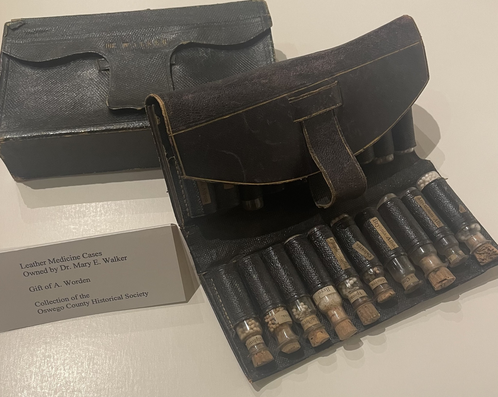

This location is both the home of the Oswego County Historical Society, established in 1896, and a historic house museum with original contents donated by the Richardson and Bates families. The descendants of Dr. Mary Walker donated many of her items to the Oswego County Historical Society where they are housed and displayed in a special exhibit in the history gallery. The Society has the Medal of Honor and the declaration signed by President Andrew Johnson awarding it to her. Also in the collection are her medical degrees, Daughters of the American Revolution certificate, surgeon’s pin, two medical kits, top hat, boots, and many documents, letters and photos. There is a large oil portrait of her in later years, as well as items from her childhood home: a child’s rocker and wall mirror. The exhibit is on a second floor not served by an elevator but a video tour will give access to anyone who cannot climb the long stairs.

Richardson-Bates House Museum

Dr. Walker's Exhibit at Richardson-Bates House Museum

Dr. Walker's medical Kit